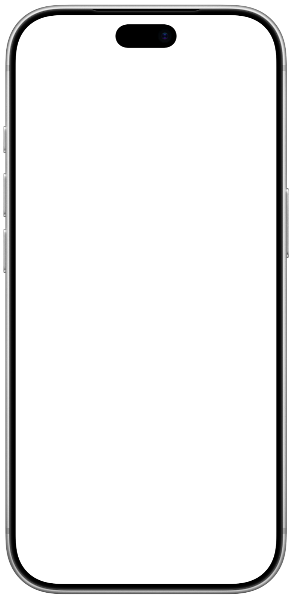

<!doctype html>
<html lang="en">
<meta charset="utf-8">
<meta name="viewport" content="width=device-width, initial-scale=1">
<title>iPhone frame</title>
<style>
  /* Apple's official iPhone 18 Pro bezel (782x1600 here, from Apple Design Resources).
     The screen cut-out was measured from the PNG's alpha: left 42, top 41, 698x1518,
     inner corner radius about 106 px. Every number below is that, as a percentage,
     so the device scales with --device-width. The Dynamic Island is part of the bezel. */
  :root { color-scheme: light dark; }
  body { margin: 0; min-height: 100vh; display: grid; place-items: center; background: #f5f5f7; }
  @media (prefers-color-scheme: dark) { body { background: #000; } }

  .iphone { --device-width: 360px; position: relative; width: var(--device-width); aspect-ratio: 782 / 1600; }
  .iphone .screen {
    position: absolute; left: 5.371%; top: 2.5625%; width: 89.258%; height: 94.875%;
    border-radius: 15.16% / 6.97%; overflow: hidden; background: #000;
  }
  .iphone .screen img { display: block; width: 100%; height: 100%; object-fit: cover; }
  .iphone .bezel { position: absolute; inset: 0; width: 100%; height: 100%; pointer-events: none; }
</style>

<!-- The screenshot must be a real one at the phone's own resolution (iPhone 18 Pro: 1206x2622),
     status bar included. Swap the bezel for iphone-18-pro-black.png on light pages if it reads better. -->
<figure class="iphone" style="--device-width: 360px">
  <div class="screen"></div>
  
</figure>
</html>
